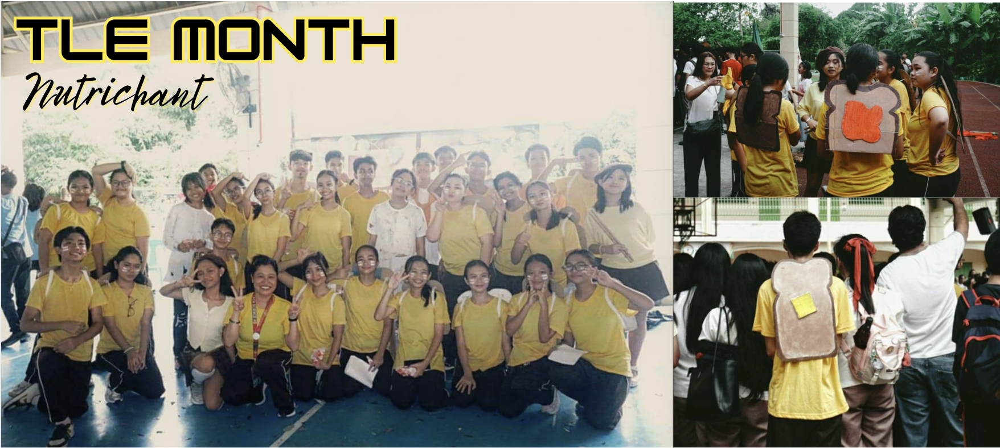

TLE Month was surprisingly one of the highlights of the school year. Even though our section was newly formed and the choreography was incredibly energetic and difficult, we rose to the challenge. Through sheer hard work, teamwork, and determination, we managed to outperform the Grade 10s. My specific contribution was serving as an actor; although I don't usually consider acting a strength, I embraced the opportunity to showcase a different side of myself. This experience taught me that age is truly just a number and that anything is possible when you prioritize character and collective effort over individual fears and stigmas.

Celebrating Buwan ng Wika this year significantly strengthened my appreciation for our national heritage. It taught me that our language is far more than just a tool for communication; it is the soul of our identity as Filipinos, serving as the invisible thread that binds us together despite our diverse backgrounds. Participating and learning about the festivities reminded me of my responsibility to protect and preserve our cultural identity in an increasingly modern world. I realized that to love one’s country is to honor the language that shaped its history. This month inspired me to take greater pride in our mother tongue, recognizing it as a symbol of our resilience and a vital part of our future.


I was surprised to find myself participating in almost every Araling Panlipunan activity this month, from the quiz bee to editorial cartooning. In the quiz bee, I applied the same logic I use for Math and Science: prioritizing deep comprehension over simple memorization. The editorial cartooning contest was particularly special as it allowed me to apply the techniques I learned during my training with Ate Jameela. Even though I see room for improvement in my artwork, I view this activity as a necessary stepping stone toward becoming a more skilled and thoughtful cartoonist.
Science Month served as a masterclass in time management and emotional resilience for me. Honestly research felt like one of the darkest and hardest times of my life, yet it really did help me to improve as a student and a person. Balancing a rigorous research project with a quiz bee taught me how to divide overwhelming tasks into manageable steps to maintain progress under pressure. Although I cried countless times and struggled with stress, I learned to keep going. Placing third in the quiz bee—just two points shy of first place—pushed me to master complex formulas in physics, biology, and chemistry. I now realize that these challenges weren't just about grades or medals; they were essential preparation for the professional world, teaching me how to stay productive while maintaining my health and happiness.
Participating and celebrating Teacher’s Day gave me a a more profound appreciation for the dedication and love our teachers pour into their work. Teachers are very much underpaid despite going beyond their job and acting as our second parents. Beyond teaching, they often stay late to help us with backlogs and offer second chances that they aren't required to give. In addition, I actively contributed by managing our classroom celebration’s food and cleanliness, helping with the presentation slides, and performing a song for them. While we may never fully grasp the paperwork and vocal strain involved in their profession, this event provided a vital opportunity to express our gratitude and acknowledge the vital role they play in our lives.
English Month was even more enjoyable this year compared to last year, especially during the book character costume parade. This year, I chose to dress up as Cerise Hood from Ever After High, which is a nod to a toy set I loved when I was younger; at the time I thought it was the perfect choice as the costume was so fashionable that I still use the black mini skirt very frequently! Another major highlight was the door book cover competition. It served as yet another reminder that when our section, Fairness, works together toward a creative goal, our collective talent and unity lead us to success.
Values Month provided a much-needed period of rest and creative growth. We took the lessons we learned from Nutrichant and applied them to our V-Pop performance. The class learned the choreography in just a single day. My role was playing the piano, which challenged me to move beyond simple melodies. I had to learn how to play specific chord arrangements that highlighted the song’s impact without overpowering the vocals. It was a "chill" month that nonetheless taught us how to be creative and consistent under a more relaxed schedule.
Serving as a level representative during Math Month taught me that leadership requires meticulous planning and execution. Beyond my duties as an officer, I also participated in the math quiz bee and the mural-making contest. I believe subject-specific events like these are crucial because they help students who struggle find new ways to enjoy the subject, while allowing those with existing skills to further hone them. This month reinforced my belief that club activities are essential for making academic subjects more approachable and enjoyable for everyone.
MAPEH Month brought a difficult but valuable lesson in sacrifice and mindset. I had to choose between the Battle of the Bands and the Math Quiz Bee, and after our team placed 4th while others took 1st, I felt crushed. However, this disappointment sparked a significant mindset shift: I began to see mistakes purely as learning opportunities rather than failures. By choosing to focus on what I learned rather than the points I lost, I became a much happier student. I now realize that my perspective is what determines if I win or lose.
wala pa
Serving as one of the Assistant Directors for our production of Noli Me Tangere was an ambitious and deeply challenging journey. Despite facing constant issues with attendance and scheduling, our cast and crew made it work, pulling everything together from choreography and original music to props and blocking in just the final week. Although the actual performance was the first time we were truly complete, the result was nothing short of memorable. This experience pushed me far out of my comfort zone in directing and music composition, but more importantly, it showed me the power of collective passion. Every note played and every line delivered wasn't just for a performance task, it was a genuine connection with the audience that turned Rizal's historical masterpiece into a living, breathing experience I will never forget.